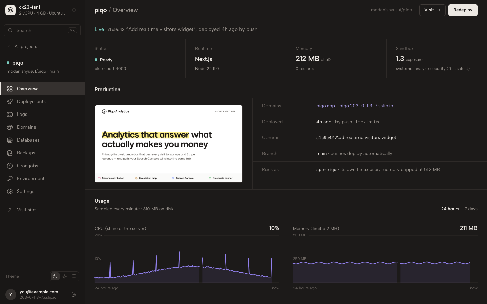

Vercel on your own server. Without Docker.
One command turns a $5 VPS into a panel that deploys your GitHub repos with HTTPS, databases, backups and zero-downtime releases. Every app runs sandboxed, and nothing is hidden from you.
$ curl -fsSL https://get.selfhostlayer.com | bash
Ubuntu 24.04, 26.04 or Debian 12 · x86 or ARM · 1GB of RAM is enough

Run 15 side projects on a $5 box.
Docker panels spend hundreds of megabytes before your first app runs. Self Host Layer runs your apps as plain processes under systemd, so the memory goes to them.
Everything a deploy needs, on your box.
The parts you'd otherwise script by hand with pm2, nginx and certbot, done properly and in one place.
Push to deploy
Connect GitHub once. Every push builds and goes live, and every commit gets its deploy status. Next.js, Vite, Astro, Nuxt, Remix, Express, Fastify and Hono are detected.
Zero-downtime releases
Each build starts next to the live version and takes over after a health check. Rolling back takes a second: the old build is still on disk.
Domains and HTTPS
Add a domain and the panel shows the record to create. It goes live only once public DNS really points at your server, with a certificate issued automatically.
Postgres, MySQL, Redis, SQLite
One click per app, installed natively. Every app gets its own database and credentials that no other app shares.
Encrypted backups
Daily to any S3-compatible bucket: S3, R2, B2. SQLite is copied safely and checked, databases are dumped, and everything is encrypted before it leaves the server. Restore in one click.
Logs, metrics and alerts
Live output and requests for every app, CPU and memory charts, and alerts to Telegram, Discord, email or a webhook when a deploy fails or an app crash-loops.
Cron jobs
Scheduled commands as real systemd timers, run as the app with its env vars, with every run's output kept.
Updates and repair
Update the panel in one click while your apps keep running. If someone edits a generated file by hand, repair puts it back.
Nothing hidden. No lock‑in.
Every app is a folder, a Linux user, a systemd unit and a Caddy file you can read. SSH in and everything is where you'd expect.
- Uninstall the panel and your apps keep running. They don't depend on it.
- Plain tools underneath.
layer logsisjournalctl, and the docs show the raw command behind every button. - Your data stays on your server. No account with us, no control plane in someone's cloud.
$ layer ps APP LIVE BLUE GREEN DOMAINS piqo blue active :4000 inactive :4001 piqo.app picker green inactive :4002 active :4003 picker.dev $ systemctl status app-piqo@blue ● app-piqo@blue.service - layer app piqo (blue) Active: active (running) since Tue; 3 days ago Memory: 118.4M (high: 409.6M max: 512.0M) $ cat /etc/caddy/sites/piqo.caddy # Generated by layer-agent. Run `layer repair` instead of editing. piqo.app { encode zstd gzip reverse_proxy 127.0.0.1:4000 }
Every app sandboxed, out of the box.
Run by hand, most apps run as root under one process manager, so one bad npm package can reach everything. Here, each app is fenced in with the same kernel features Docker uses.
Its own Linux user
No shell, no password. Builds run as that user too, so a malicious install script is contained like the app.
A locked-down systemd unit
A read-only system, private /tmp, no new privileges, filtered system calls, and memory and CPU limits.
A panel with no power of its own
The web UI runs unprivileged. A small agent does the privileged work, and only from a fixed list of actions.
Locked to you
Two-factor sign-in, rate limits, and an option to answer only your addresses or your Tailscale network.
From a bare server to a live site.
About ten minutes, most of it waiting for the first build.
Run one command
On a fresh VPS. It sets up the panel, the web server, the firewall and swap, and prints your panel's address with a setup token.
Connect GitHub
The panel creates a private GitHub App under your account. Its key never leaves your server.
Pick a repo and push
It's live at a free HTTPS address in a minute. Add your own domain whenever you like.
Next: the tools every product needs.
One-click apps built for Self Host Layer, running next to your projects on the same box.
Your server. Your apps. One command.
Try it on a spare VPS: everything it installs is listed, and removing it leaves your apps running.
$ curl -fsSL https://get.selfhostlayer.com | bash